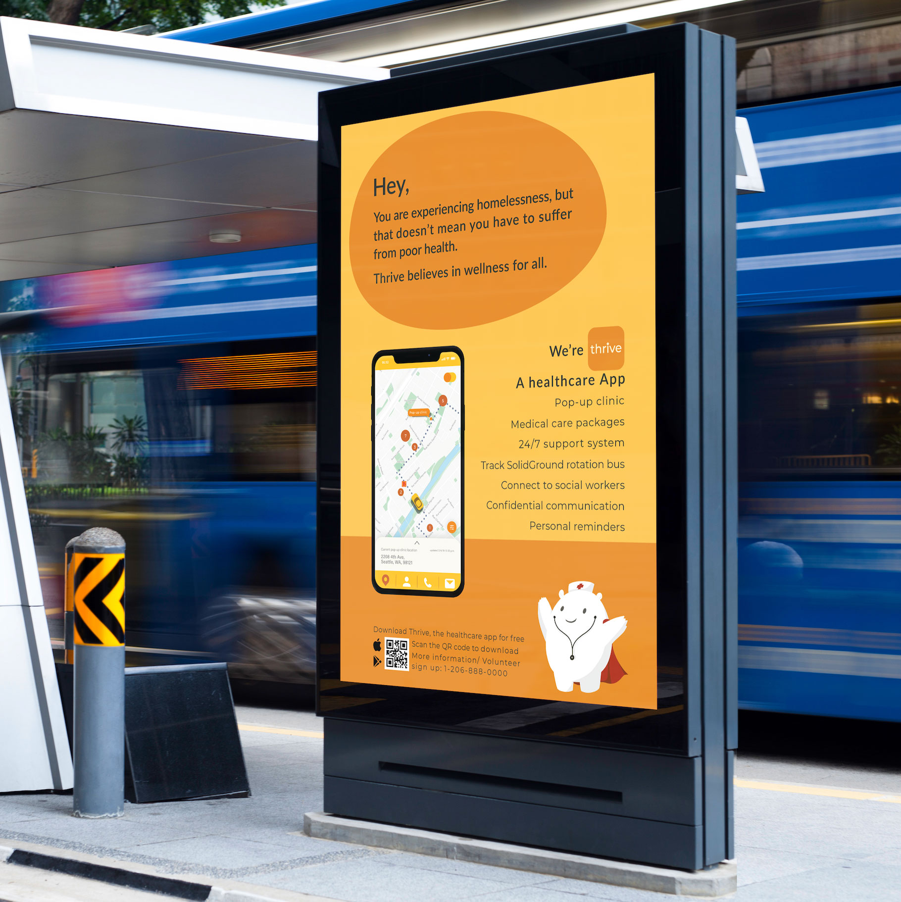
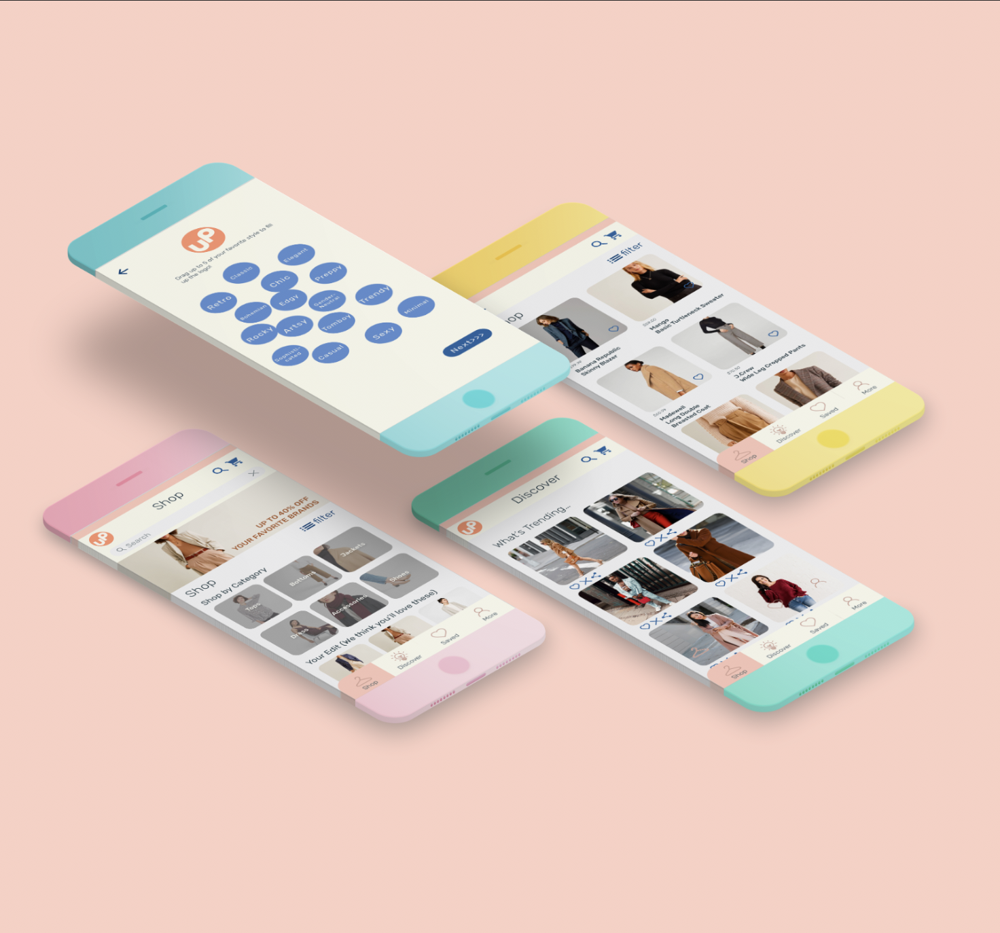
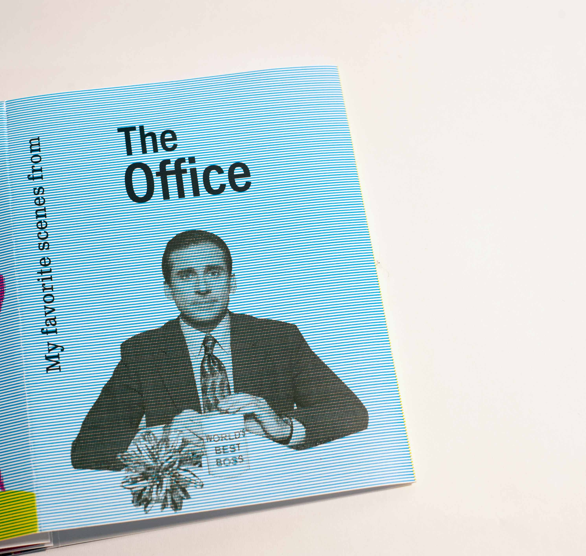

Work
Web/UX Design: As user centered, practical designs based on data and research, these projects include user stories, websites, and prototypes.
Click images to see details

Thrive Project
A healthcare project to help homeless people get accessible and affordable healthcare services.
See more >>

StepUp Project
A budget fashion app for female graduates who are freshly out of the school.
See more >>
Visual Design: Making cool stuff is fun, making fun stuff is cool. These are some of the print design and packaging design I did.
Click images to see details:)
Alice Bliss
Book jacket
See more >>

The office
A zine I made using Bradbury Thompson's method: Half tone lines/dots and CMYK overlay.
See more >>
Admiral Coffee
Packaging design including cup, loyalty card, and folder.
See more >>
×
Home
Work
About
Contact